制作計画書
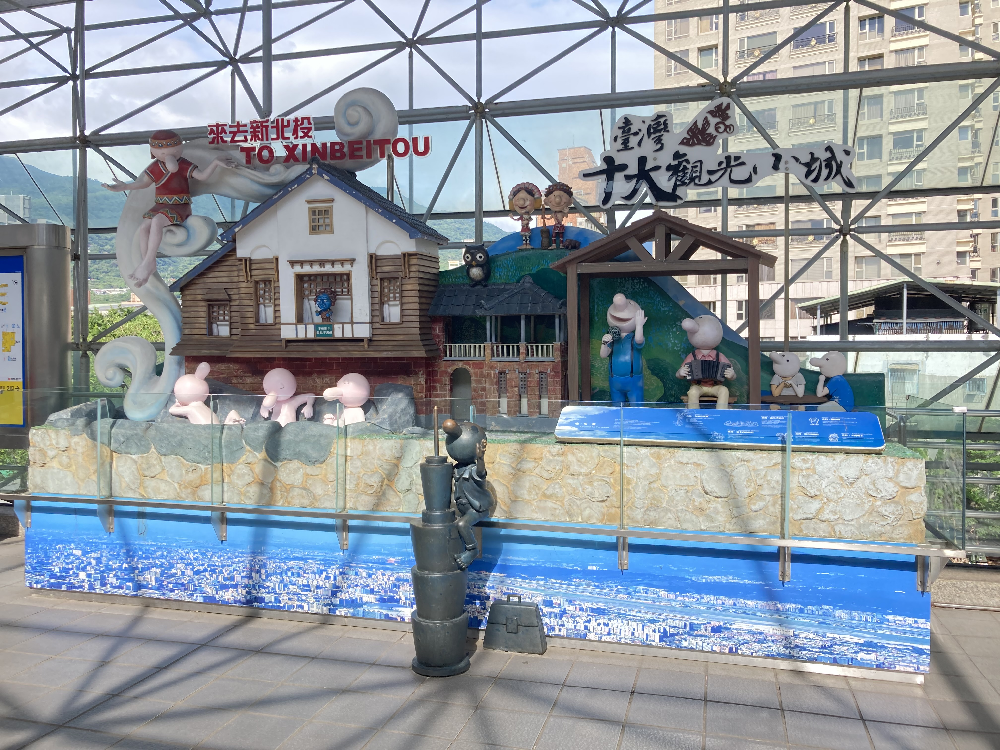


一、 制作動機
大学を通じた四年間はまだたくさんのところに行かないため、卒業前に見に行きたい。何の方法で記録することをしように考えている。もともと日本のフリープランページを見ていたが、突然日本全国のスタンプのウェブサイトに気付いた。日本のスタンプの模様は様々である。スタンプにはそれぞれ独自の特徴がある。スポットの特徴が現されているので、どこのスタンプか見ればすぐ分かる。台湾に景色の綺麗な観光スポットがたくさんあって、文化と歴史の悠久な博物館や記念館などもある。しかし、台湾に完全に観光スポットを収集したウェブサイトや書籍などはほとんどない。それで、台湾のスタンプを収集したくなって紹介したいと思う。
観光スポットを訪ねたら、普段なら記念品やお土産など買うのが一般的である。スタンプを収集するのが、無料だし、楽しい。それに、スタンプを収集することは、ゲームをしてミッションを完了する楽しみもある。そして、次のミッションを楽しみにしている。一つのスタンプを収集すると、スタンプをもっと収集したいと思うようになる。
私の趣味が物を集める事であるため、スタンプを収集するのは楽しい。最初の純白なノートにスタンプが徐々に増えていくのを見ると、収集すればするほどやりがいが感じられる。それに、今まで行ったことがある場所や当時の大切な思いは、スタンプを見ると、頭に浮かぶ。このように、スタンプは非常に興味深いものであろう。


 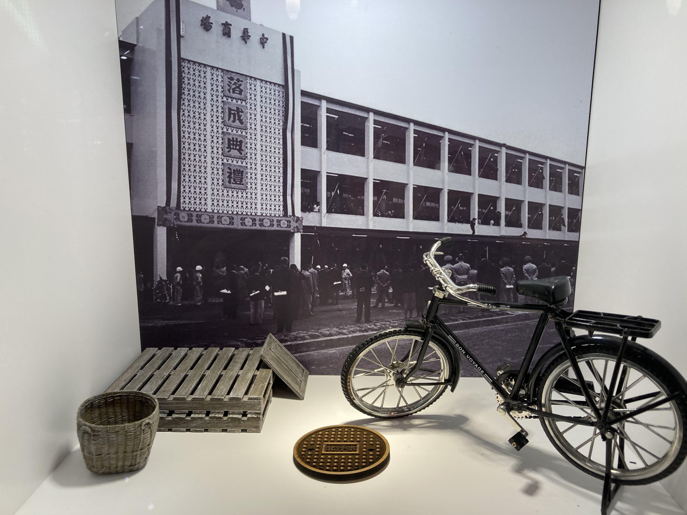
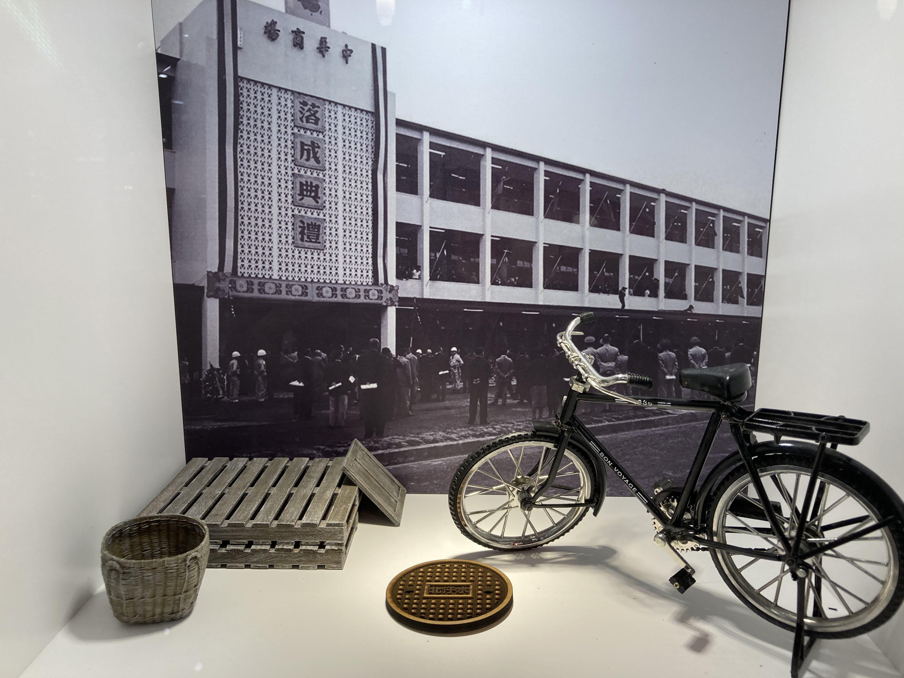

二、 制作方法
本制作は、日本語を用いて台北市観光地のスタンプの紹介を制作し、自分で製作するウェブサイトにアップする。
本制作では、淡江大学日本系の葉夌先生の指導のもと、ウェブサイトで台北市観光地のスタンプの紹介制作を目指す。そして、次の手順で創作を進めていきたい。まず、今台北市でどち観光スポットのスタンプがあるかを調べておく。次に、同じ地方の観光スポットに先に行く、後で他のところに行く。距離について順序を決める。それから、現場に見学するながら、スタンプを収集する。そして、自分の言葉で様々な観光スポットのスタンプの特別な点を紹介する。最後に、ウェブサイトを習って作る後、紹介資料をアップしていい。それによって大体が明らかになるのである。
 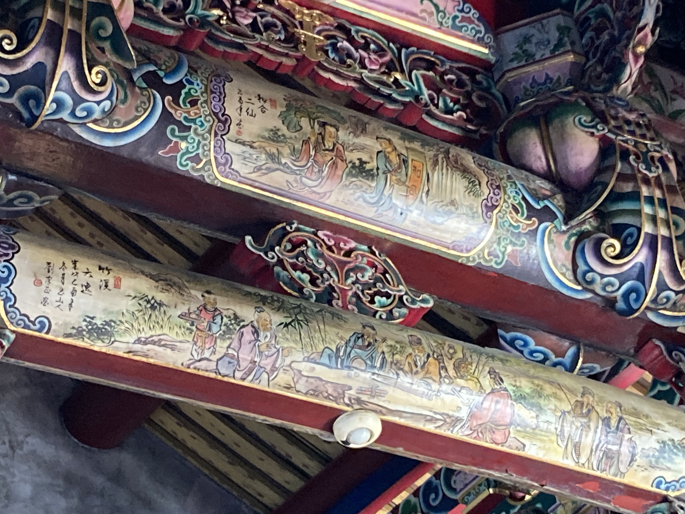
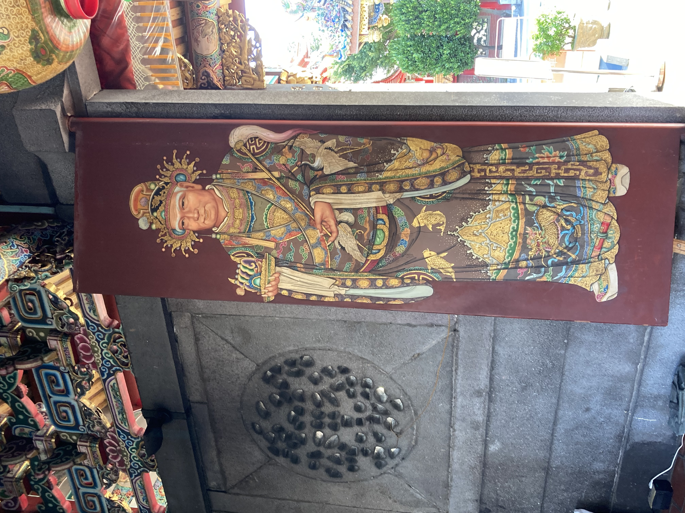
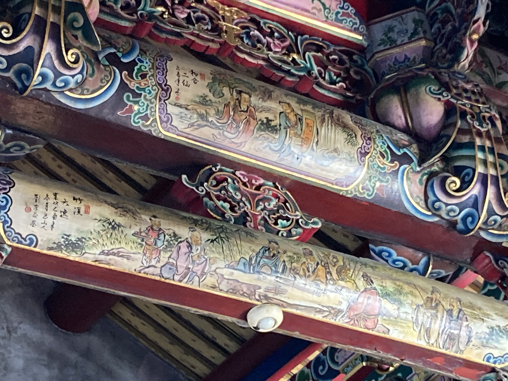
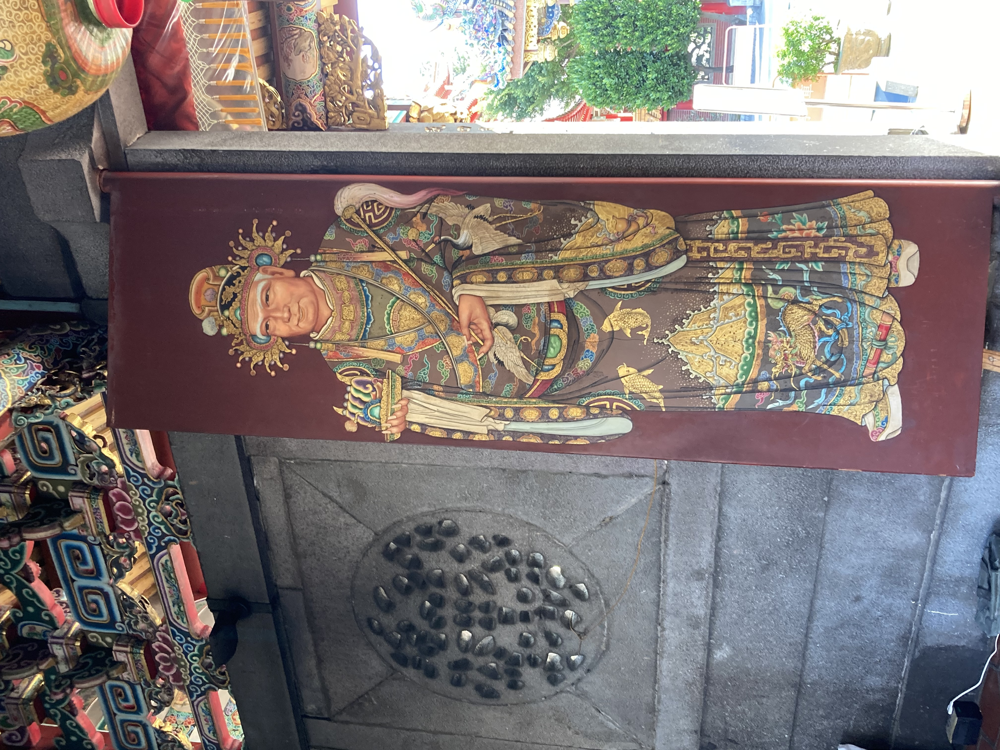


 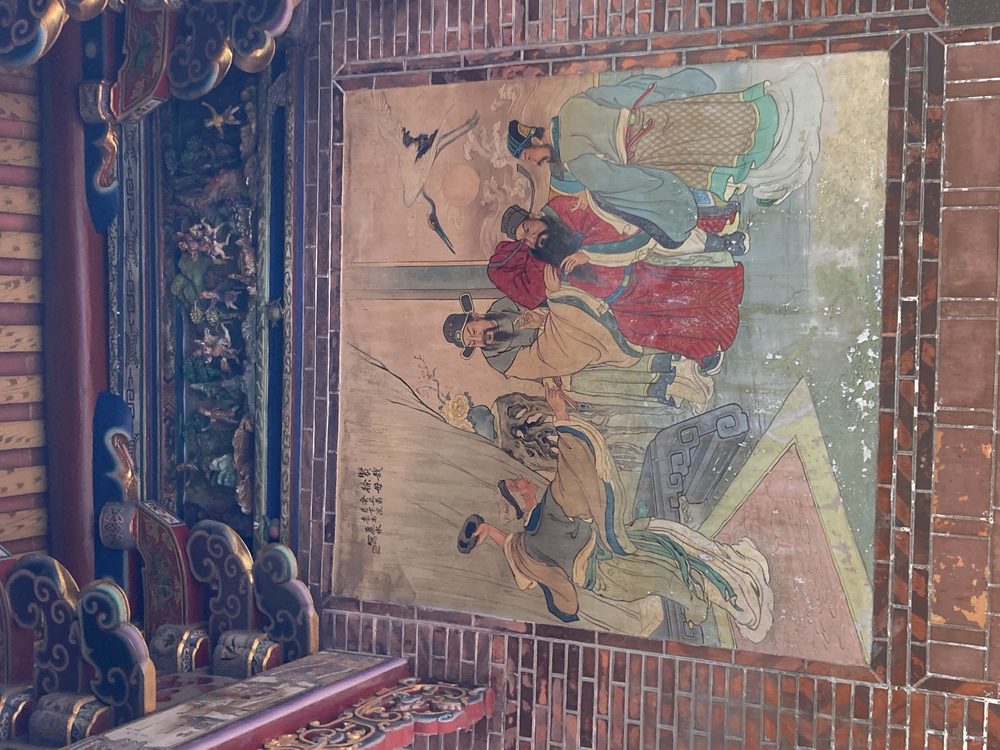
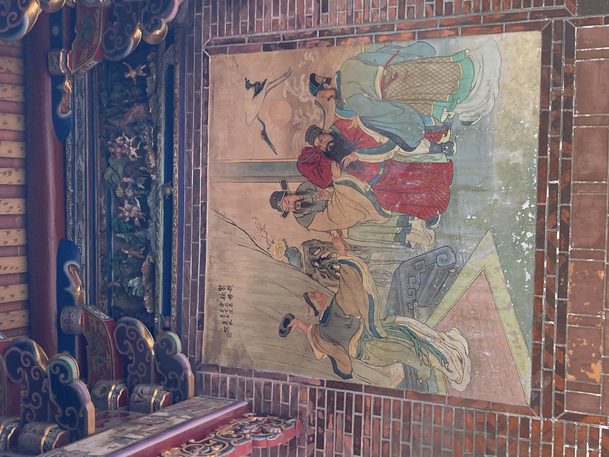
三、 制作価値と意義
本制作は、スタンプで台北市の観光スポットを紹介するのを目的にしたものである。本制作によって、現在の台北市にあるスポットのスタンプを記録して紹介することができる。本制作はスタンプで観光のマーケティングを目指したものである。その点で、一定の研究価値があると確信している。また、制作者にとっても、四年間暮らした台北市の観光スポットで台北市をさらに深く理解ことができる。スタンプを収集するによって、様々な観光スポットへ見学するができる。
なお、本制作では触れなかったスタンプがない観光スポットについては、今後の課題としたい。今後も、まだ行かない観光スポットを他の方で記録して紹介するために、努力していきたい。


四、 制作感想
この一年間に、色々な事があったんだ。コロナウイルスのせいで、私たちはますくをつけるなけらばならないし、親友と別れて会えないことになった。突然に、当たり前の事をできないて、色んなところに行けない。だから、今回の卒業創作をするのは本当に嬉しいんだった。実は、また四つのところに行ったんだけど。別々には、象山、國父紀念館、士林官邸、中正紀念堂だ。コロナので、士林官邸や中正紀念堂はスタンプを提供しない。本当にかなり残念だ。でも、展覧を見に行っちゃた。
今回の創作は楽しい。先生のおかげで、創作のテーマが明らかに確立しました。内容の誤りを正していただきました。本当にありがとうございます。ウェブサイトの制作はちょっと苦しいんだけど、自分で作るのはやはり楽しい。
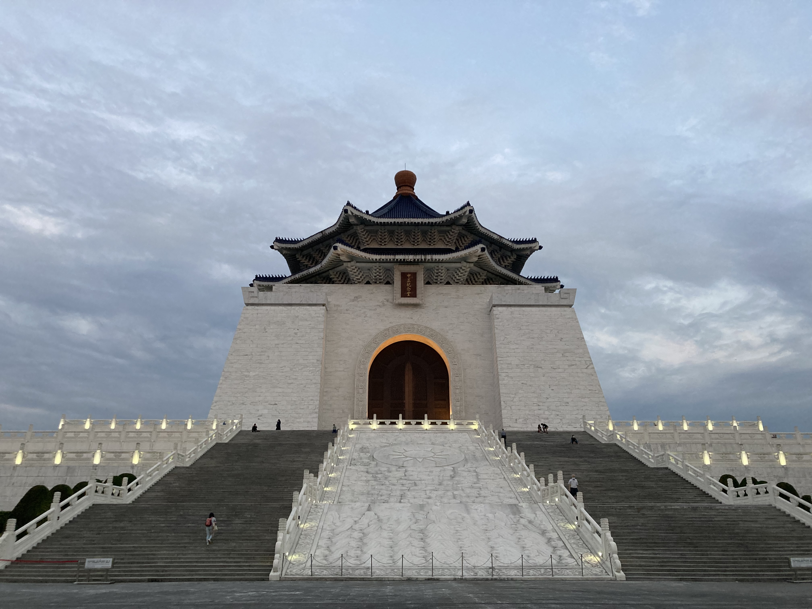
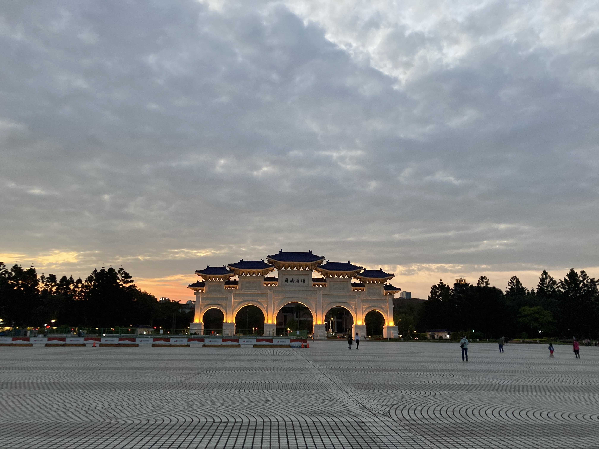
 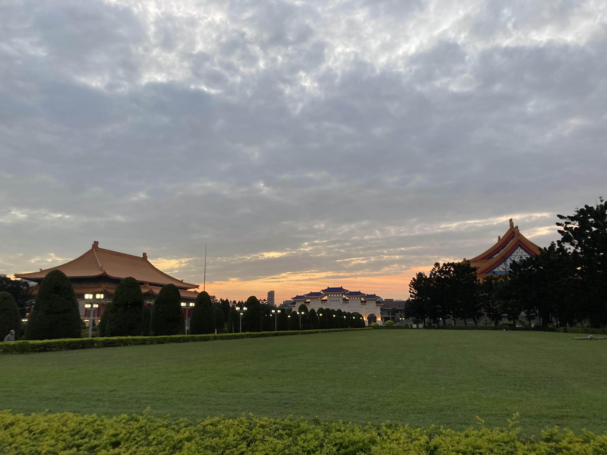
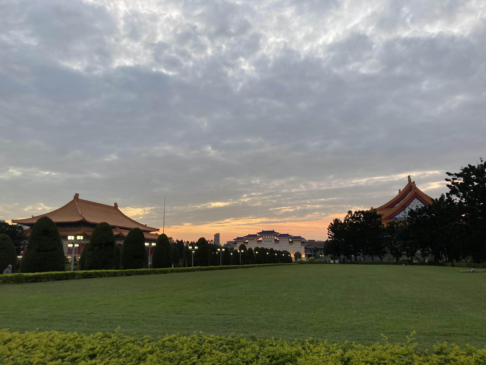
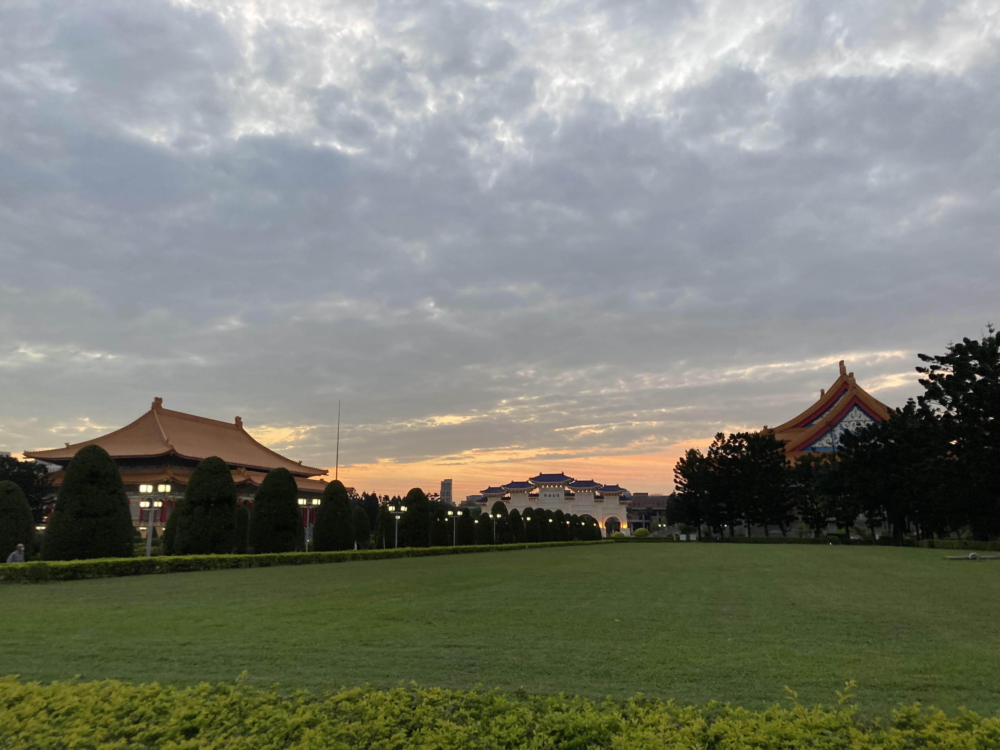
六、 参考文献一覧
- 1.新北投車站：
- 3.北投溫泉博物館：
- 5.故宮：
- 國立故宮博物院導覽手冊
- 6.文昌宮：
- 7. 天后宮: